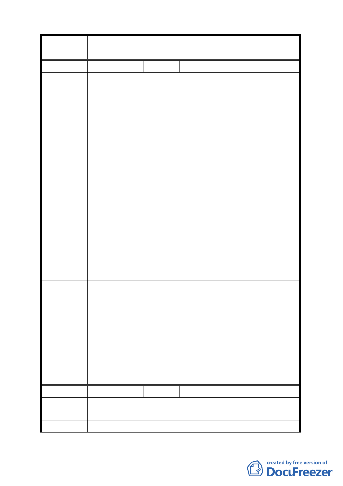

案名
編號
陳情理由
建議辦法
委員會議
決議
編號
陳情理由
建議辦法
變更臺北市北投區行義段一小段四九地號等保護區為溫泉
產業特定專用區都市計畫案
１ 陳情人 何榮助
一、磺溪流域係為溫泉區中重要且敏感的生態資源，現公告
之東側範圍線，南北將磺溪河域劃入特定區範圍，而中
間區段則未將磺溪河域劃入範圍，明顯未顧及整體生態
環境永續經營管理之生態廊道連續性與重要性，恐影響
未來溫泉產業特定專用區整體環境發展之管控。
二、現公告西側範圍線之劃設，顯然並未考量山稜線、水域、
等高線或其他相關之地理或重要天然之界線審慎劃
定，係遷就現狀將現有溫泉開發業者納入，以致衍生行
義路西側土地發展深度嚴重不足（部分處僅有 10 公尺
深），如申請開發案需面臨計畫道路或既成道路並需退
縮留設人行空間，將產生畸零地。
三、行義路西側開發區為陽明變電所所阻斷而不連續等不合
理之狀況，明顯欠缺整體發展之考量，且有圖利他人之
情形。
四、該西側規範範圍內未列入為溫泉產業區之保護區用地，
目前大多為農業使用，但上游變更為溫泉專特區後將因
灌溉渠道變更，灌溉用水污染，造成農地無法耕種等問
題，
一、建請東側範圍線將磺溪流域整體納入特定專用區範圍。
二、考量未來行義路西側溫泉產業之整體發展及交通之改善
空間，建請西側範圍以行義路以西 100 公尺至 150 公尺
寬為基準予以劃設。
三、故請將行義路西側之保護區一併變更為溫泉產業特定專
用區或景觀遊憩區。
本案以市府本次會議所送計畫書（市府業依規定區分為主要
及細部計畫書），依會議資料與書面補充資料，以及本次會
議決議第一點修正後通過。
２ 陳情人 何智遠
計畫範圍太小，規範範圍又未知數，本土地已列入保護區 40
至 50 年，希望能給我們機會。
將計畫範圍擴大，將規劃範圍一起納入開發利用。
6